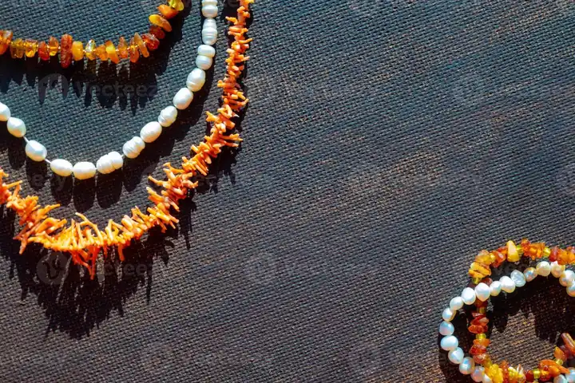

有機寶石總論：生命創造的珍寶
寶石不一定來自地底——珍珠、珊瑚、琥珀，是生命用自己的身體寫下的寶石詩篇。


核心定義
有機寶石（organic gemstones）指由生物體（動物或植物）產生或衍生的寶石材料：珍珠（貝類分泌物）、珊瑚（珊瑚蟲骨骼）、琥珀（樹脂化石）、煤精（木化石）、象牙、玳瑁、骨雕等。它們的共同點：來自生命，且多含碳與有機質。
有機寶石與礦物寶石的根本差異：硬度低（多為 2.5–4）、怕酸怕熱怕化學品、且「有機」特質讓它們會老化（褪色、乾裂）——但它們的溫潤質感與文化意涵，是礦物寶石無法取代的。
特徵與分類
| 寶石 | 來源 | 硬度 | 代表產地 |
|---|---|---|---|
| 珍珠 | 貝類 | 2.5–4 | 日本、南洋 |
| 珊瑚 | 珊瑚蟲骨骼 | 3–4 | 地中海、日本 |
| 琥珀 | 樹脂化石 | 2–2.5 | 波羅的海、緬甸 |
| 煤精 | 木化石 | 2.5–4 | 英國、西班牙 |
| 玳瑁 | 海龜甲殼 | 2.5 | 熱帶海域 |
有機寶石的美學是「溫潤與生命感」：珍珠的暈彩、珊瑚的豔紅、琥珀的暖金、煤精的深沉黑——每一種都帶著生命的故事。鑑定上，有機質讓它們對酸、熱、紫外極敏感——保養是收藏重點。
科學原理
有機寶石的化學主體是碳酸鈣（珍珠、珊瑚）或碳氫化合物（琥珀、煤精）：珍珠與珊瑚是碳酸鈣（文石/方解石）＋有機基質，琥珀是樹脂的碳氫聚合物（含琥珀酸）。鑑定常靠酸反應（碳酸鈣遇酸冒泡）、熱針測試與密度。
有機寶石的「老化」科學：碳酸鈣怕酸（汗液、清潔劑）、琥珀怕酒精與高溫、珊瑚怕熱水——有機寶石的保養，就是與「時間與環境」對抗的學問。
鑑定與鑑別方法
- 看光澤與紋理：珍珠暈彩、珊瑚同心紋、琥珀樹脂光
- 酸測試：碳酸鈣遇酸冒泡（珍珠珊瑚）
- 密度與折射率：各材料不同
- 熱針測試：琥珀燒焦味、塑膠刺鼻味
- 顯微鏡：有機結構（珍珠層、珊瑚紋）
市場行情與保養建議
行情上，有機寶石各有體系：天然珍珠天價（南洋珠、天然海水珠）、養殖珍珠親民；紅珊瑚（阿卡/莫莫）以克計價、稀有者比黃金貴；琥珀蜜蠟在華人市場受歡迎。此外，象牙、玳瑁等涉及瀕危物種貿易，現代市場嚴格受限。
提醒：有機寶石的仿品與優化極多（玻璃仿珍珠、塑料仿琥珀、染色珊瑚）——且部分材料涉及保育法規（象牙、玳瑁、珊瑚），購買前務必確認合法性與證書。
常見誤區
頂級天然珍珠、阿卡珊瑚的價格可與名貴礦物寶石比肩——有機寶石的價值看品質與稀有度，不是看「有沒有礦物身分」。
有機寶石最怕「時間」：怕酸、怕熱、怕紫外、怕乾燥——它們比其他寶石更需要細心呵護。
冷知識
珍珠由貝類分泌珍珠質層層包裹而成——它誕生於生命體的防禦機制，是「生命寫給世界的情書」。
琥珀常包裹昆蟲、植物殘骸——它們是數千萬年前的生態標本，《侏羅紀公園》的恐龍 DNA 想像就源自琥珀。
反直覺觀點
天然珍珠與阿卡珊瑚的頂級品價格碾壓多數礦物寶石——價值由稀有與美決定，硬度只是保養參數。
生命創造的美，帶著生命的脆弱——珍珠怕汗、琥珀怕酒精、珊瑚怕熱。越有生命感，越需要無微不至。